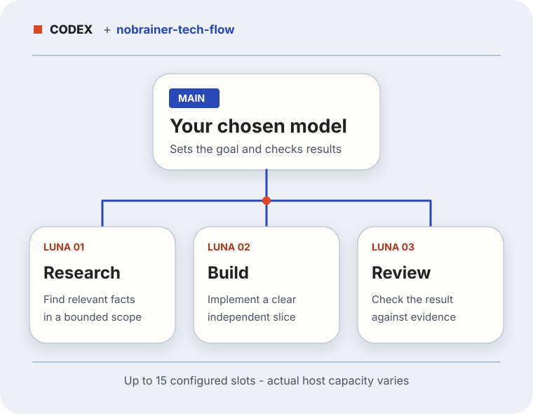
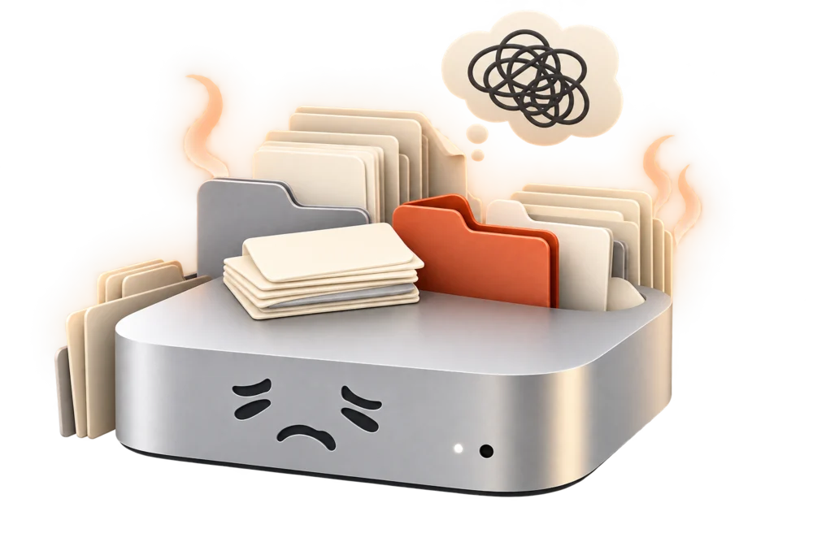
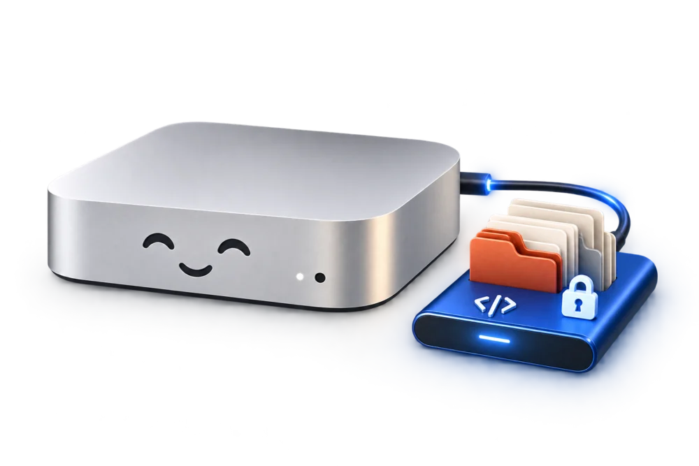
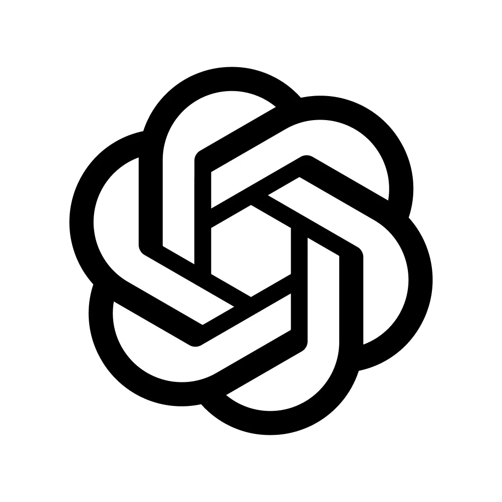

See when max is available
Discover catalog-listed reasoning levels, including max when present. Choose it for demanding work if your client offers it; the installer keeps your current effort.
Your Codex setup may be leaving capacity unused
Your model may have more to give. Check its available reasoning and context, raise the configured Luna agent ceiling, and let nobrainer-tech-flow keep the work coordinated without changing your chosen MAIN model.
*GPT-6 API models list a 1.05M-token window; your Codex client may expose less. The installer uses its local model catalog. See model specs. No files move during setup.

Reasoning · context · orchestration
Codex exposes controls that are easy to overlook. The preflight reads the selected model's local catalog and shows what is available before anything changes.
Discover catalog-listed reasoning levels, including max when present. Choose it for demanding work if your client offers it; the installer keeps your current effort.
Configure the selected model's catalog-backed limit and show remaining context in the CLI. A setting cannot expand a smaller model or provider limit.
Raise the configured ceiling to 15. nobrainer-tech-flow scopes independent tasks, keeps MAIN in charge and checks results. Actual capacity depends on the host.
Stop passing the whole project into every subtask. Focused delegation and session handoffs can keep irrelevant context out; actual token savings depend on your work.
Start from a URL
The public repository includes a read-only preflight and a configuration installer for macOS, Windows and Linux (Python 3.11+). Review the model limits and exact edits before applying.
Install NoBrainer Codex from https://github.com/nobrainer-tech/nobrainer-codex. Read the repository instructions and docs/spec.md. Run python3 install.py --check and show me the selected model's context limit, catalog-listed reasoning levels and exact changes. Then run --apply for the approved configuration and verify it. Keep my selected MAIN model, effort, login and chats. Use nobrainer-tech-flow (https://github.com/nobrainer-tech/nobrainer-tech-flow) for useful Luna delegation.The app link only opens a registered Codex installation. Paste the copied prompt into a new conversation yourself; if the link does nothing, open the app normally.
NoBrainer Codex reports max only when it appears in the local model catalog. It never forces max on an existing conversation. The configured context and 15-agent ceiling remain subject to actual model and host support.
Optional extra
That happened here. I moved the bulky Codex data to an encrypted external SSD, kept independent backups and a rollback path, and checked the app's real file handles. The guide starts with backup and encryption checks. You do not need Colima or Docker to use it.
Read the optional SSD guideIllustration of this Mac's setup; moving files and encrypting a drive are separate, supervised steps.



ChatGPT is an OpenAI mark. NoBrainer Codex is an independent toolkit, not an OpenAI partnership.